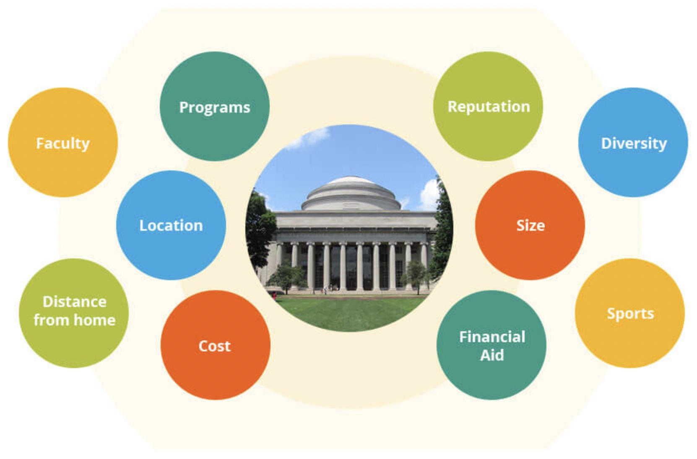

Returning To School, Finishing What You Started
Research Schools You Are Intersted In

There are so many schools, with so many different programs available that choosing the right one can be overwhelming. Some things that should be considered when researching possible schools are: cost, location, application fees, credit transfer, attendance options, social clubs, gpa requirements, probationary periods, and student ratings of professors and staff.
While it is important to research as much as you can about potential schools, one aspect that is often over-looked is the personality of the school. Make sure the school you choose fits your personality as a student. For example, if you aren’t a partier, you may not want to apply to a school that is notorious for having a party atmosphere. This might not be a big deal if you will be attending classes virtually, but if you plan to be on-campus this could be distracting. There are lot of aspects to consider before making a final decision, so take your time.
Steps To Researching Schools
| Step 1 | Find schools that offer your major |
|---|---|
| Step 2 | Determine if relocation is necessary |
| Step 3 | Calculate cost of attendance |
| Step 4 | Select top 3 schools that meet the majority of your needs |